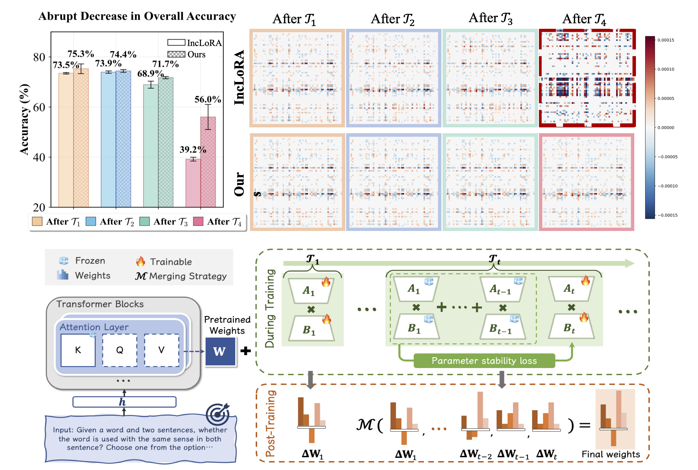

🏅 Honors & Awards
- SenseTime AI Scholarship Top 30 AI undergraduates in China (2025)
- National Scholarship Top 0.2% nationwide (2023, 2024)
- He Zhijun Scholarship Highest scholarship in the Department of Computer Science (2024)
- Guo Yilian Scholarship Funded by State Street’s former Global Executive Vice President (2023, 2025)
- First-Class Academic Scholarship, Top 3% in Zhejiang University (2023,2024)
- Outstanding Practice Achievement Award, Zhejiang University (2024)
- Top10 Students in Yunfeng Campus, Zhejiang University (2023)
- Top10 Students in Computer Science Department, Zhejiang University (2025)
- Outstanding Student, Zhejiang University (2023, 2024, 2025)
|
🧐 Research
My research focuses on developing adaptive and self-improving foundation models/agents across language, multimodal, and VLA settings. I study stable and efficient model adaptation, ranging from continual learning, model merging, to reinforcement learning strategies, aiming to enable models that can reliably acquire new abilities, generalize across tasks, and refine their behavior in dynamic environments.
|
|

|
Resolving Conflicts in Lifelong Learning via Aligning Updates in Subspaces
Yueer Zhou*, Yichen Wu*†, Ying Wei†
Preprint, 2025
[Paper] [Code]
We propose a stable low-rank adaptation method for continual learning, which can effectively adapt to new tasks while eliminating catastrophic forgetting.
|
|
|
MotionStreamer: Streaming Motion Generation via Diffusion-based Autoregressive Model in Causal Latent Space
Lixing Xiao,
Shunlin Lu,
Huaijin Pi,
Ke Fan,
Liang Pan,
Yueer Zhou,
Ziyong Feng,
Xiaowei Zhou,
Sida Peng†,
Jingbo Wang
ICCV 2025
[Paper] [Project Page] [Code]
|
🏆 Academic & Innovation Competitions
- Gold Award, China International College Students Innovation Competition (2025)
- Gold Award, Zhejiang International College Students Innovation Competition (2025)
- 1st Prize, Chinese National Mathematics Competitions (2024)
- 3rd Prize, Zhejiang Provincial Advanced Mathematics (Calculus) Competition (2023)
- 2nd Prize, Zhejiang Provincial Physics Competition (2023)
- 2nd Prize, National College Student English Competition (2023)
- 3rd Prize, ZJU English Writing Competition (2022)
|
|
Hobbies
|
Outside of coursework, I enjoy virtual singers and illustrations. I occasionally write songs and draw illustrations as personal creative projects, which naturally makes me interested in the development of multimodal generative models and their applications in creative media.
|
Thank Jon Barron for sharing his website's source code.
|
|